Hey there! My name is Jonathan Li, and I'm currently a sophomore in high
school. I'm really into robotics and ML, and I've been building
cool things ever since I was young. I have a Youtube channel where I explain many of my projects, and my GitHub
has most of the code for them. Scroll down to view some of my work!
My GitHubMy youtube channel
I'm working at a lab at UMass Amherst for an upcoming humanoid project and arm! I so far helped with IsaacLab RL training, STM32 stuff, and got to learn PCB design.
Some Projects I'm Proud of! Split into categories (I tried my best to classify)
I got to learn and design a PCB in KiCad!
I created a little GUI for tuning Kp and Kd values for BLDC motors. Angle, torque, & velocity graphs are shown. I learned about FOC too.
The code for the motor controller is actually modified from the MIT mini cheetah, but the PhD student I'm working with modified it, I just added the GUI and modified some
of the STM32 code to send & receive serial data about the torque, encoder angle, kp, kd, etc. The serial data gets sent to my laptop and is plotted on the GUI via a simple
python script which also sends serial data via UART back to the STM32.
Isaac Sim and Isaac Lab setup! I played with RL with the Franka arm and a couple of Unitree robots.
I created a little "oscilloscope" using an STM32, it reads data from a potentiometer and shows it on a python GUI. I learned more about ADCs.
I added a shoebox cover to Casper V2 (in the video I didn't secure it so its loud)
I made different iterations of Casper, my robot dog. For Casper V2 I made the legs 3 DOF so it can strafe and rotate in place more smoothly. I experimented with jogging outdoors and going over rocks & small obstacles.
I used skills I learned from Precalculus like trig (law of cosines) and parametric equations to make the stepping trajectory a sine wave. I found the trot gait to be the best balance between
speed and stability for me (I tried others like crawl and pronk). I got the aluminum from Ace, drilled holes, 3D printed the legs, and used an Arduino. I named him Casper because I know a dog named Casper and he's really cute!
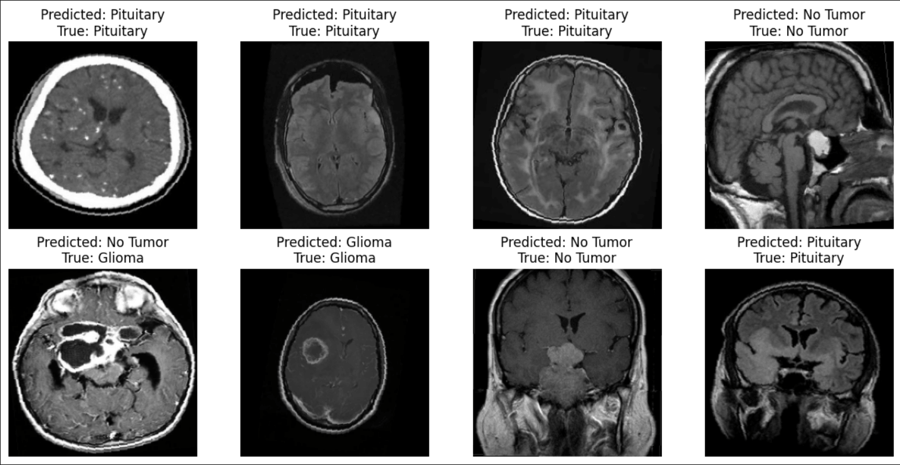
I played around with brain tumor detection and pneumonia detection using CNNs in PyTorch (I used Kaggle datasets). I wanted to see how ML could be used in healthcare.
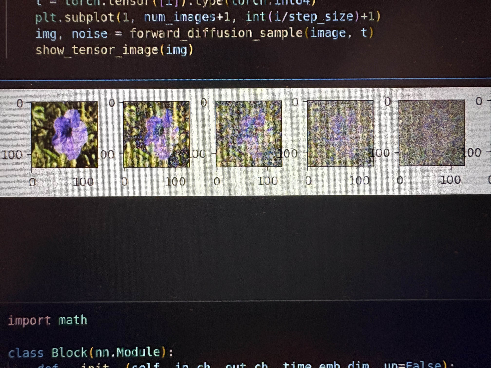
Little DDPM, I learned about the U-Net architechture and denoising process.
I played around with VQA using the moondream VLM on a Jetson Orin Nano. VLA models are really useful for autonomy.
I played around with the IMX219-83 stereo camera with the Jetson Orin Nano and created a disparity map.
This can be used for robots w/o LiDAR or other distance sensors and solely rely on vision.
I made a gesture controlled mouse (using laptop webcam) using Google's Mediapipe API for hand
landmarks & PyAutoGUI to control the mouse. As you can see its quite hard to control...
Displaying 3D models on Hiro (or other fiducial markers like QR codes)
using AR.js, I may look into VSLAM instead.
I used the NEAT algorithm for CartPole.
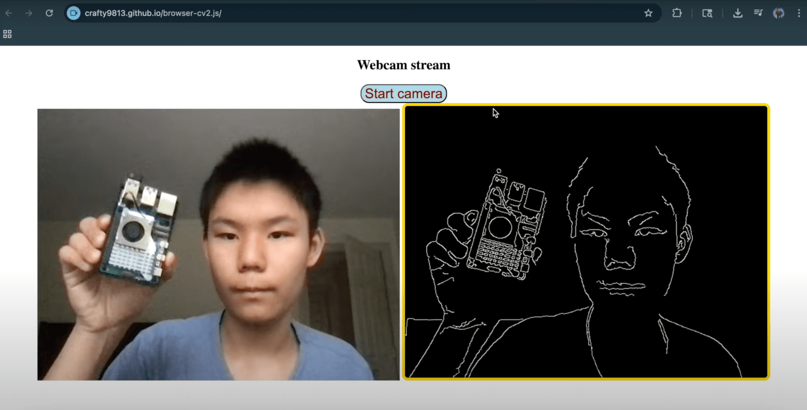
I created a web page using OpenCV.js to show computer vision
algorithms! Typically OpenCV is with Python or C++, but this uses JS
so no Python backend needed!
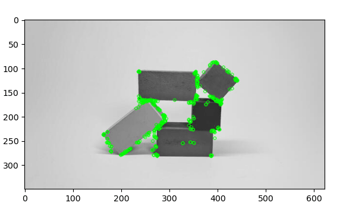
I played w/ ORB feature detection and mapping (BF matcher, FLANN).
I used RL (specifically Q-learning) for a "car" (yellow rectangle) to
reach a goal (green circle). The trained model is stored in a pickle file.
Facial feature recognition using Haar Cascades (pretty old but powerful algorithm).
PyTorch digit classification using a CNN. Data is from the MNIST
dataset.
Sentiment analysis using sklearn. I'm using the IMDB movie review dataset from Kaggle.
GroundingDINO and PyTorch for FRC 2025 algae detection, helped by
mentor.
Lunar Lander RL using PPO.
I made this Raspberry Pi facial recognition security camera in middle school.
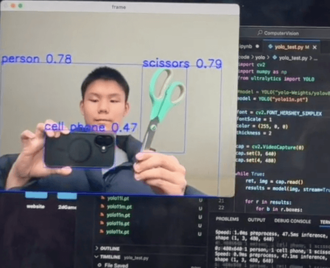
Played w/ YOLO11
LiDAR connected to Raspberry Pi real time data visualization in RViz
via SSH
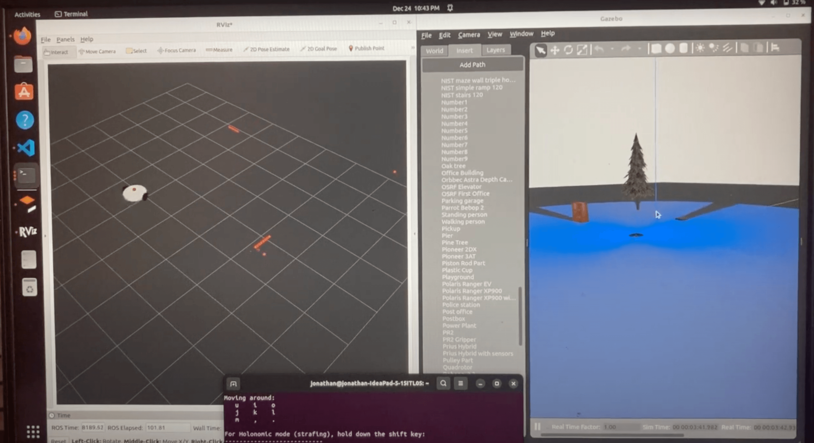
I learned the basics of ROS! ROS is mainly used in higher level robotics such as in universities and maybe even industry. Gazebo & RViz sim shown with LiDAR.
I made an autonomous Raspberry Pi robot that delivers snacks using voice commands, follows AprilTags, and picks
up objects using YOLO object recognition. It uses a vosk model for speech recognition and YOLO converted to the NCNN format to run at a useable speed on the pi.
Since I'm using monocular cameras, I got depth estimation by measuring the bottle width, finding my focal length (by measuring from a known distance),
and plugging into distance = (focal length * bottle width) / pixel width in frame found by using simple trig.
I made this HC-SR04 ultrasonic sensor motion lamp for my mom to make her life easier,
especially for when she needs to get up at midnight. I made this in middle school and may or may not have gotten shocked once.
Arduino roomba using LiDAR (RPLiDAR A1M8), no SLAM.
Arduino state-machine based autonomous robot to throw away trash (plastic
bottles). I used mecanum wheels since I wanted strafe capabilities but also less complexity than say a swerve or crab drive.
I made this in 8th grade.
I made Pioneer V3. I used carbon fiber propellers and 3508 BLDC motors for heavier lifting weight. It's also using an Arduino, but since it's a larger drone less frequent IMU updates are needed.
I used a 200 Hz loop. Motor mounts and center hub are 3D-printed, aluminum is from Ace Hardware. In total Pioneer V3 weighs 5 lb.
I gave myself a challenge and made Pioneer V2, a larger Arduino quadcopter (30 in dia) in only around 20 hours! I also used it to help plant seeds for my mom.
Sorry the video quality is kind of bad...you might be able to see the seeds falling.
I added a dropping mech to my first Arduino quadcopter I made in 8th grade. I noticed during the winter rabbits and coyotes were looking for food so I thought this could be used to prevent animal starvation.
I did a little experiment converting my custom swerve module into an arm so 2 main motors are at the bottom. I thought this could help reduce inertia and be more efficient.
I made a little 2D inverse kinematics demo. Its sort of like a SCARA arm.
Mini 3D printed 3 DOF arm (not my design, from Thingiverse) but I'm using an STM32. It's very silent because of the small stepper motors.
6 DOF 3D-printed arm using an Arduino, I made this in 7th grade but the design was from Thingiverse. I printed it on my first Ender FDM printer.
I made a Rocker Bogie suspension rover inspired by the mars rover. This can be used for robots outside on rough terrain. It's just using an Arduino, I mainly wanted to see the concept.
The aluminum is from Ace and the joints and wheels (TPU) are 3D printed, I designed it in Fusion. I later on added a ATGM336H GPS and HMC5883L compass for waypoint navigation.
I made a water rocket just for fun. I made it in middle school, its using a hand ball
pump and the rocket is just a plastic bottle.
I made a simple but fairly fast mini autonomous race car just using ultrasonic sensors. I experimented with slowing down before accelerating near turns. I was inspired by F1Tenth although this is way less complicated...
I'm using a standard 1000kv BLDC drone motor geared down to drive and it works surprisingly well. The only limitation was the ultrasonic sensor reading updates not being fast enough so this is only considered low speed for the car.
I designed the car in Fusion.
I played with lane detection in OpenCV for autonomous driving. I used Canny edge detection and the Hough Transform.
My custom Arduino swerve drive, I basically DIYed everything (except for raw metal and Arduino lol). Check out my Youtube video to see more on my 3D-printed module design!
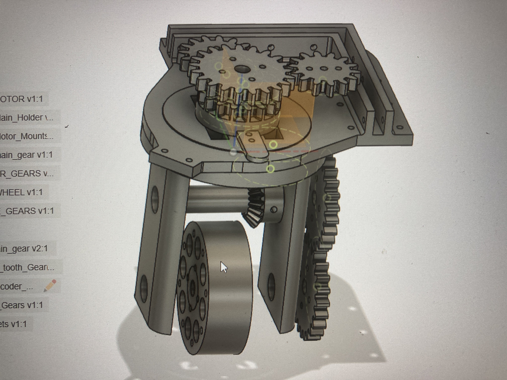
(Heres a photo of my swerve module CAD).
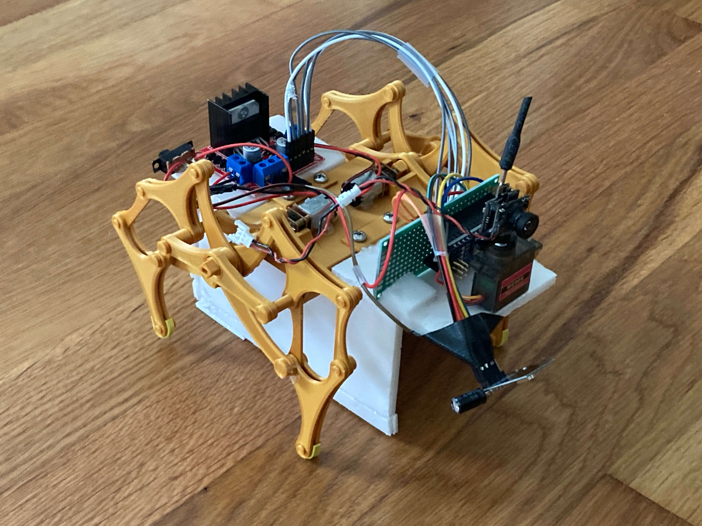
My RC FPV strandbeest model using NRF24l01 modules. Goal was to mimic an animal so you could
use it to monitor species. I'm using an Arduino nano and N20 motors.
I made an Arduino based 2 wheel self balancing robot (wheel inverted pendulum) that uses an MPU6050 and a complementary filter. The frame is from my old 3D printer, and the wheels are 3D-printed TPU.
I tried making a passive wing morphing mechanism for one of my rubber-band powered ornithopters (I also made dragonfly versions with pairs of wings).
This could improve efficiency by creating less drag on the upstroke, and some universities already did this.
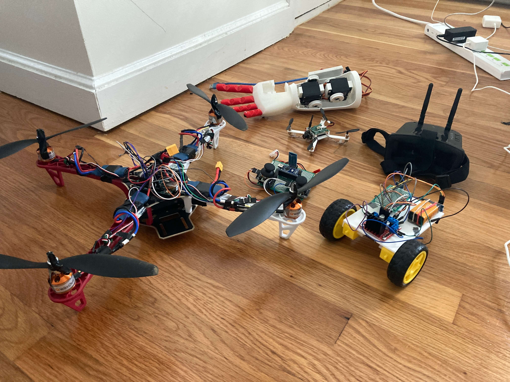
Stuff I brought to show at Open Sauce 2024!
ArUco marker pose display (also one of my Open Sauce 2024 projects).
I made an ESP32 controlled car (and boat). I learned about the ESP-NOW protocol.
I added a flywheel to my line follower (using IR sensors) to launch bottle caps.
I made a super capacitor monocoper/mapleseed inspired by nature
I made a lightbulb using graphite and a poorly sealed glass body using a 3D-printed TPU closure...
I made a large RC boat that could be used for water missions. I used a foam board that I cut with my DIY foam cutter!
I designed (in Fusion) and 3D printed the servo to rudder mount which also held the BLDC thruster in place.
I made different kinds of (very) odd electric scooters and skateboards... Its hard to see but for my scooter
I used an Arduino with a joystick to control a servo to pull the drill trigger.
I experimented a bit with gyroscopic precession in helicopters. I also made a rubber-band powered helicopter with a tail rotor, inspired by Peter Sripol.
I made a gravity powered ping-pong ball launcher for middle school SciOly. I 3D printed a crank mechanism to angle the launcher barrel.
I made a marble roller coaster for middle school SciOly. I 3D-printed the tracks. Heres a demo of the far air jump and funnel.
I made this voltage detector inspired by ElectroBoom's video...
I made this sketchy brushed DC motor
I made a tiny state machine robot using an MPU6050 so it can drive straight. I tuned PID pretty fast after making my first quadcopter above.
I made a mechanism for a battlebot to launch a bottle. Same mechanism as the water rocket but w/o water, servo to release the pressure.
Visiting Boston Dynamics!
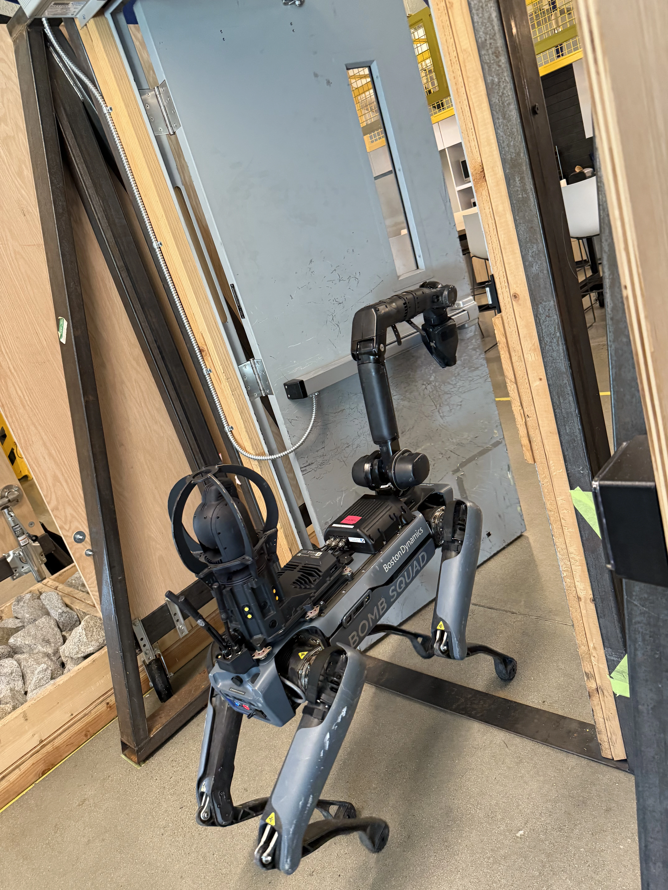
I got to visit Boston Dynamics' headquarters in Waltham, MA! It was super
fun seeing their robots & driving some of their quadrupeds. I saw how Spot had stereo cameras on each side.
My Open Sauce 2024 experience & some cool (& famous) people I met!
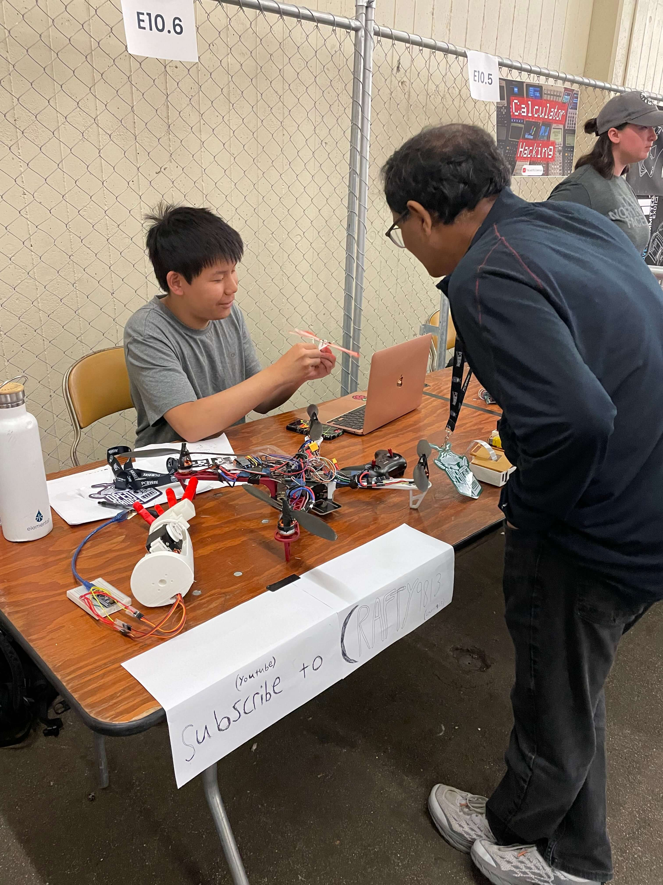
My booth! Me explaning a dragonfly ornithopter mechanism which many
found interest in (even a professor at MIT!) This simple mechanism could be used for tiny drones,
although
I'm not too sure if it would be more efficient than just using
propellers
At my booth I showed my Arduino quadcopter which uses an MPU-6050 gyro &
accelerometer, a 3D-printed humanoid hand, a line follower using 2 IR sensors,
facial recognition on a Raspberry Pi, an ornithopter, ArUco marker
detection, and a simple HC-05 bluetooth RC car. It was very fun!